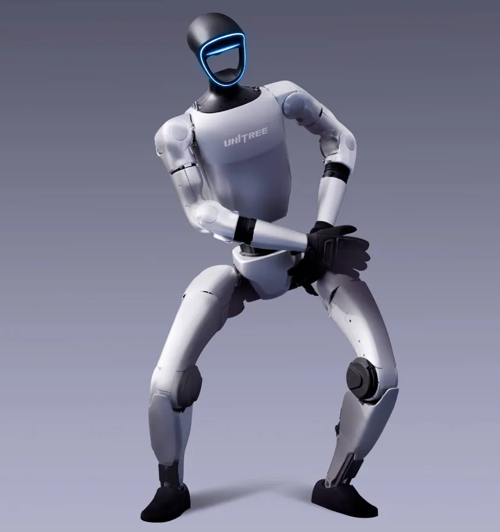

The Humanoid Robot Race: Who's Winning, and How
China's humanoid sector vs. the world — shipments, funding and the race to 10,000-unit scale.
Two research houses, two ways of counting, one conclusion: in the first half of 2026, 86–97% of the world's humanoid robots were shipped by Chinese companies. Meanwhile the highest-valued Western players — Figure at $39B, Tesla targeting 50,000 Optimus units — are still iterating prototypes and deploying internally. Here are the numbers, both tallying methods, and what to watch.

Any serious comparison of the humanoid-robot industry in 2026 needs to state its counting method first — shipment tallies, revenue rankings and valuations tell three different stories. This guide lays out both research-house numbers, the five Chinese vendors at the top, the Western challengers by valuation and production plan, and the structural reasons China is shipping volume.
The two most-cited H1 2026 numbers come from Counterpoint Research and Frost & Sullivan, and they disagree on units but not on the winner:
| Source (date) | Global H1 2026 figure | Growth | China's share |
|---|---|---|---|
| Counterpoint Research (Aug 2026) | 22,000+ units shipped | +300% YoY | Top-5 vendors all Chinese; combined ~86% |
| Frost & Sullivan (Sep 29, 2026) | ~36,000 units sold | — | Top-5 revenue slots all Chinese (UBTECH #1) |
| Earlier Counterpoint-based reads (Aug 2026) | ~19,100 units | +272% YoY | Chinese makers >97% of shipments; ~85% of buyers in China |
Why do the numbers differ? The tallies use different scopes and dates: Counterpoint counts shipments and its August report captured 19,100 units before a final read of 22,000+; Frost & Sullivan counts sales — including consumer units such as UBTECH's U1 — which pushes the total to ~36,000. What does not change between versions: Chinese vendors hold every slot in the top five, and overseas companies such as Tesla and Figure are classified by Frost & Sullivan as still in prototype-iteration and internal-use stages.
Using Counterpoint's shipment tally (the most widely quoted), the H1 2026 global ranking looks like this:
| Vendor | H1 2026 shipments | Share | Context |
|---|---|---|---|
| AgiBot (智元) | ~9,700 | >43% | Overtook Unitree for the first time; 20,000th unit built by Sep 24; 300 robots deployed at Chimelong Spaceship Park |
| Unitree (宇树) | >7,000 | ~31% | G1 half-size line passed 11,000 cumulative units; STAR Market IPO on Aug 19 peaked at ~¥444.9B market cap; G1+ launched Sep 14 from ¥95,000 |
| Galbot (银河通用) | >1,100 | ~5% | Bipedal ET1 unveiled at WRC 2026; "Galaxy Brain" embodied foundation model |
| UBTECH (优必选) | ~1,000 (thousand-unit level) | ~4.4% | By revenue, #1 in Frost & Sullivan's ranking: ¥620M, 16,120+ units sold in H1; 10,000-unit Liuzhou factory running since Sep 12 |
| Leju Robotics (乐聚) | ~650 | ~2.9% | Kuangren (夸父) line, education + research focus |
Two readings of the same table are worth flagging. First, shipment leadership (AgiBot) and revenue leadership (UBTECH) are different companies — AgiBot's lead rests partly on counting wheeled and half-size platforms, a definitional dispute peers have raised. Second, the Chinese list is already diversified by price and form factor: consumer humanoids (UBTECH U1, 13,361 orders), half-size bipeds (Unitree G1), full-size industrial robots (AgiBot Yuanzheng A3 Ultra) and service deployments (Chimelong, 4S shops, hotels). Read the full humanoid race tracker →
The Western field is led by companies that are richer on paper and earlier in volume. Frost & Sullivan explicitly places Tesla and Figure in the prototype-iteration and internal-use phase; their production plans are the counter-argument:
| Company | Robot | 2026 status | Scale / price target |
|---|---|---|---|
| Figure AI (US) | Figure 03 | Production at its own BotQ factory; deployed at BMW Manufacturing and Catalyst Brands; ~1 unit/hour (12,000/yr) pace | $39B private valuation (Series C, Sep 2025); ~$1.7–2.3B raised; NVIDIA, Microsoft, Bezos, Brookfield backing |
| Tesla (US) | Optimus Gen 3 | Mass production began Jan 2026 at Fremont; 50,000-unit 2026 target; external sales from late 2026 | $20,000–30,000 consumer price at scale; Fremont Model S/X lines converting into an Optimus hub targeting 1M units/year |
| Agility Robotics (US) | Digit | Deployed at Amazon fulfillment and GXO; 1,000+ cumulative units | Focused on logistics; ~$0.4B raised |
| Boston Dynamics (US) | Atlas (electric) | 30 years of locomotion research; commercial launch targeted 2026–2028 | $140,000–150,000 unit price; Hyundai manufacturing network |
| 1X Technologies (Norway/US) | NEO | Home humanoid in pilot; ~$0.6B raised | Consumer-home positioning; OpenAI-backed |
Add the caveat that matters most: these figures are not symmetrical. Counterpoint's 22,000-unit H1 total includes China's consumer and half-size robots; the West's comparable volume is still measured in the hundreds to low thousands. Tesla's 50,000-unit target for 2026 — if met — would alone exceed China's entire H1 output, and its $20,000 price point would reset the market's cost curve. That is the bet, not the current state.
Research houses disagree on method. Counterpoint Research counts more than 22,000 units shipped globally in H1 2026, up roughly 300% year-on-year. Frost & Sullivan counts sales of about 36,000 units in the same period. Both agree Chinese companies took the overwhelming majority — 86% of the top-five share or 97% of total shipments depending on the tally.
AgiBot (Zhiyuan) — about 9,700 units in H1 2026 per Counterpoint, a 43%+ share that overtook Unitree for the first time. Unitree shipped more than 7,000 (~31%), followed by Galbot, UBTECH and Leju.
By shipments, Tesla is far behind — Frost & Sullivan classifies Tesla and Figure as still in prototype-iteration and internal-use stages. By ambition, Tesla targets 50,000 Optimus units in 2026 and a $20,000–30,000 consumer price at scale, converting Fremont's Model S/X lines into an Optimus hub targeting 1 million units a year.
By valuation, yes: Figure is privately valued at $39 billion after its September 2025 Series C. Unitree peaked at roughly ¥444.9 billion (~$62 billion) on its August 2026 STAR Market debut before pulling back, and reports the higher real-world shipment volume of the two.
A complete domestic supply chain (motors, reducers, roller screws, sensors), a faster cost-down curve (Unitree's G1+ starts at ¥95,000), policy and local-government backing, and a willingness to deploy in consumer and service scenarios — theme parks, 4S shops, hotels — that Western makers are still approaching cautiously.
China's humanoid sector vs. the world — shipments, funding and the race to 10,000-unit scale.
The 140+ humanoid companies and the components behind the world's fastest robot line.
The ¥119,800 U1 against Tesla's $20,000 price target — the consumer humanoid battle.
China's half-size volume seller against the US's $39B platform player.
The official numbers and the fastest-growing segments of the world's #1 robot market.
Who makes the joints and actuators that give Chinese humanoids their cost edge.
Company profiles, product pages and supplier analysis for China's robotics ecosystem.